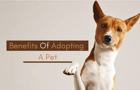

Adopting a pet friend at AGJS means giving a loving home to an animal in need while gaining a loyal companion. AGJS is dedicated to rescuing and rehabilitating pets, ensuring they are and ready for their forever homes. By adopting from AGJS, you not only enrich your life with a furry friend but also support a community committed to animal welfare and responsible pet ownership. Join the family and experience the joy and fulfillment ofgiving a pet a second chance at a happy life.
Why Adopt a Pet Friend at AGJS?

Benefits of Our Website
- User-Friendly Interface: Our website is designed to be intuitive and easy to navigate, ensuring a smooth and pleasant experience for users of all ages.
- Detailed Pet Profiles: Each pet has a comprehensive profile with photos, health information, and personality traits to help you find the perfect match.
- Easy Adoption Process: We streamline the adoption process with online applications and step-by-step guidance, making it convenient and hassle-free.
- Resources and Support: Access a wealth of resources on pet care, training, and health, along with support from our knowledgeable staff to help you every step of the way.
- Community Engagement: Join our community forums and events to connect with other pet lovers, share experiences, and learn more about responsible pet ownership.
- Success Stories: Read heartwarming stories from families who have adopted through AGJS, showcasing the positive impact of pet adoption.
Experience the many benefits of adopting from AGJS and become part of a compassionate community dedicated to improving the lives of pets and their owners.